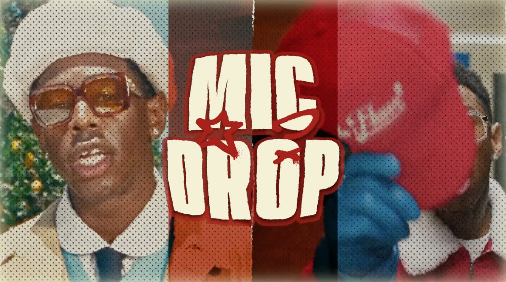
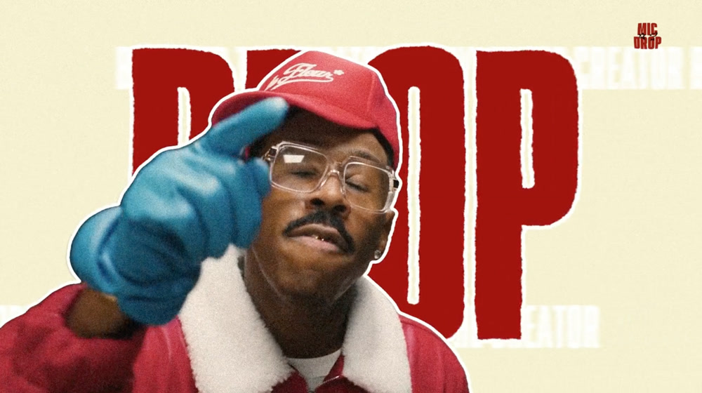
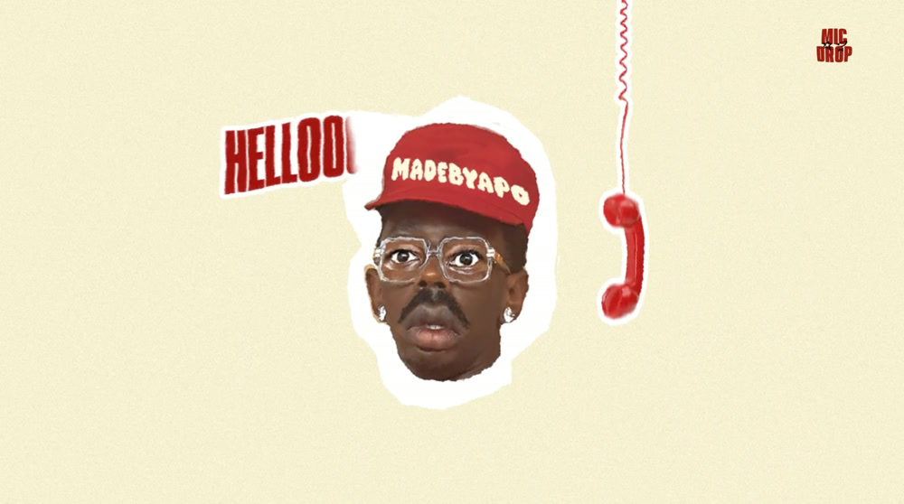

MIC DROP
Une émission TV fictive pour Tyler, the Creator.
Au programme
-
01 Le générique
-

02 Le plateau
-

03 Le standard
Générique
- Réalisateur
- MADEBYAPO
- Motion design
- MADEBYAPO
- Site
- Dallas
2026